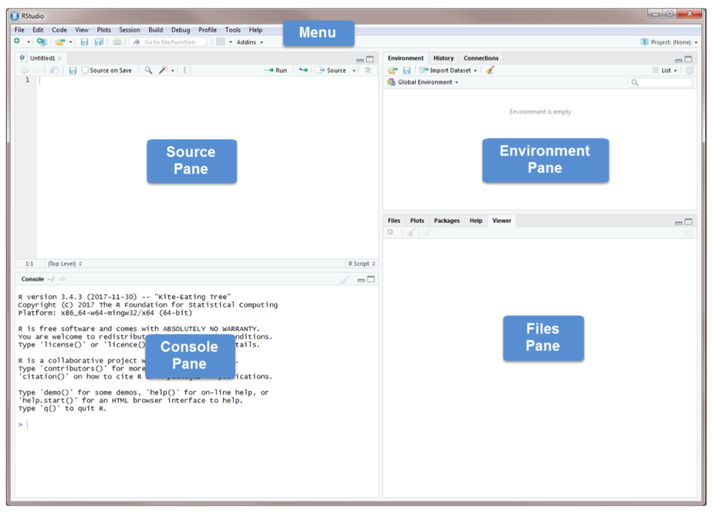

Chapter 1 Introduction
The following sections will serve as an introduction to the R basics that could be used in data analytics. At the beginning, these introductory R subjects may feel like an overwhelming amount of information. The leaning curve will be steeper as practice more. You should try all of the codes from these examples and solve the practice exercises.
R is used both for software development and data analysis. We will not use it for software development but apply some concepts in that area. Our main goal will be to analyze data, but we will also perform programming exercises that help illustrate certain algorithmic concepts.
1.1 Installation of R, RStudio and R Packages
To get started, you will need to install two pieces of software:
R, the actual programming language: Download it from here. – Chose your operating system, and select the most recent version.
RStudio, an excellent integrated development environment (IDE) for working with R, an interface used to interact with R: Download it from here. Throughout this book, you will use RStudio instead of R to learn R programming.
1.2 RStudio

Source Pane, click on the plus sign in the top left corner. From the drop-down menu, select R Script . As shown in that dropdown menu, you can also open an R Script by pressing Ctrl+Shift+N. You should now see the screen above.
The Console Pane is the interface to R. If you opened R directly instead of opening RStudio, you would see just this console. You can type commands directly in the console. The console displays the results of any command you run. For example, type 2+4 in the command line and press enter. You should see the command you typed, the result of the command, and a new command line.

To clear the console, you press Ctrl+L or type cat(“\014”) in the command line.
R code can be entered into the command line directly (in Console Pane) or saved to a script (Source Pane).
Let’s try some coding.
2 + 3 #write this on the command line and hit Enter## [1] 5Now write the same line into the script in Source Pane and run it
The Source Pane is a text editor where you can type your code before running it. You can save your code in a text file called a script. Scripts have typically file names with the extension .R. Any text shown in green is a comment in the script. You write a comment by adding a # to an RScript. Anything to the right of a # is considered a comment and is thus ignored by R when running code. Place your cursor anywhere on the first few lines of code and click Run. You can also run code by pressing Ctrl+Enter.

The Environment Pane includes an Environment, a History tab, and a Connections tab. The Connections tab makes it easy to connect to any data source on your system.
The Environment tab displays any objects that you have created during your R session. For example, if we create three variables: \(x\), \(y\), and \(z\), R stored those variables as objects so that you can see them in the Environment pane.
To do object assignments, you need to assign value(s) to a name via the assignment operator, which will create a new object with a name.
x <- 5
y <- x*1.5
z <- x - y*3
ls()## [1] "x" "y" "z"We will discuss R objects in more detail later. If you want to see a list of all objects in the current session, type ls() in the command line. You can remove an individual object from the environment with the rm() command. For example, remove \(x\) by typing rm(x) in the command line. You can remove all objects from the environment by clicking or typing rm(list=ls()) in the command line. The History tab keeps a record of all the commands you have run. To copy a command from the history into the console, select the command and press Enter.
The Files Pane includes several tabs that provide useful information. The Files tab displays the contents of your working directory. The Plot tab shows all graphs that you have created. The Packages tab displays the R packages that you have installed in your System Library.
1.3 Packages
An R package typically includes code, data, documentation for the package and functions inside, and tests to check everything works as it should. Check to see if the package moments has been installed. If you cannot find it, you need to install it by using the command install.packages("moments"). Once you have installed the package, you need to load it using the command library(moments). Or you can use install tab and follow the instructions and the go to package to check it to activate as shown below.

The help tab has built-in documentation for packages and functions in R. The help is automatically available for any loaded packages. You can access that file by typing help(mean) or ?mean in the command line. You can also use the search bar in the help tab.
The packages can be installed from sources other than CRAN. For example, in this book we will use RBootcamp which is not located on CRAN
#install.packages("remotes")
#remotes::install_github("yaydede/RBootcamp")One of the most difficult things to do when learning R is to know how to find help. Your very first helper should be Google where you post your error message or a short description of your issue. The ability to solve problems using this method is quickly becoming an extremely valuable skill.
Do not be discouraged by running into errors and difficulties when learning R. It is simply part of the learning process.
The Viewer tab displays HTML output. R packages such as R Markdown and Shiny create HTML outputs that you can view in the Viewer tab. We’ll see it later.
1.4 Working directory
Without further specification, files will be loaded from and saved to the working directory. The functions getwd() and setwd() will get and set the working directory, respectively.
getwd()## [1] "/Users/yigitaydede/Dropbox/Documents/Courses/MBAN/RBootcamps/Bootcamp_book"#setwd("Book2022")
#List all the objects in your local workspace using
ls()## [1] "x" "y" "z"#List all the files in your working directory using list.files() or
dir()## [1] "_book" "_bookdown_files"
## [3] "_bookdown.yml" "_main_files"
## [5] "_output.yml" "01-intro.md"
## [7] "01-intro.Rmd" "02-cross-refs_files"
## [9] "02-Others_files" "02-Others.md"
## [11] "02-Others.Rmd" "03-ReadWrite.md"
## [13] "03-ReadWrite.Rmd" "04-visual_files"
## [15] "04-visual.md" "04-visual.Rmd"
## [17] "05-DataMan_files" "05-DataMan.md"
## [19] "05-DataMan.Rmd" "06-Progrmamingbasics.md"
## [21] "06-Progrmamingbasics.Rmd" "07-Sim_cache"
## [23] "07-Sim_files" "07-Sim.md"
## [25] "07-Sim.Rmd" "08-cross-refs_files"
## [27] "08-EDA_files" "08-EDA.knit.md"
## [29] "08-EDA.Rmd" "09-parts.Rmd"
## [31] "10-citations.Rmd" "11-blocks.Rmd"
## [33] "12-share.Rmd" "13-references.Rmd"
## [35] "14-cross-refs_files" "14-cross-refs.Rmd"
## [37] "Book_for_RBootcamp.log" "Book_for_RBootcamp.rds"
## [39] "book.bib" "Bootcamp_book.Rproj"
## [41] "docs" "index.md"
## [43] "index.Rmd" "packages.bib"
## [45] "png" "preamble.tex"
## [47] "README.md" "renderc75a3fc285ec.rds"
## [49] "some_functions.R" "style.css"
## [51] "table1.text"#As we go through this lesson, you should be examining the help page
#for each new function. Check out the help page for list.files with the
#command
?list.files
#or
help("list.files")
#Using the args() function on a function name is also a handy way to
#see what arguments a function can take.
args(list.files)## function (path = ".", pattern = NULL, all.files = FALSE, full.names = FALSE,
## recursive = FALSE, ignore.case = FALSE, include.dirs = FALSE,
## no.. = FALSE)
## NULLFor this bootcamp, I would suggest to create a RStudio Project in your local driver. RStudio projects make it straightforward to divide your work into multiple contexts, each with their own working directory, workspace, history, and source documents.
RStudio projects are associated with R working directories. You can create an RStudio project:
- In a brand new directory
- In an existing directory where you already have R code and data
- By cloning a version control (Git or Subversion) repository
To create a new project in the RStudio, use the Create Project command (available on the Projects menu and on the global toolbar)
1.5 Hints
- R distinguishes upper case from lower case letters. Thus a variable named
Xdiffers from another variable namedx. - The way to learn programming is through practice. The learning curve to R is not bad. You may struggle a bit in the process, but the skills learned will be invaluable for you in the future.
- There are many ways to write a code to solve the same thing. You can develop your own style. But, if you see nother and better code, try to learn from others!
- There are many option that you can customize R Studio. Check out Tools > Global Options > General tab in the menu bar of RStudio.
- Before you start coding, draft a plan to address the question at hand.
- There is convention in writing codes. Try to adhere these accepted styles.
- Comment your code properly (using a # sign at the beginning of each line). Good documentation is a great reminder what you have done. Believe me you will forget later the lines in the your own script.
- The character
>in the R Console indicates that R is ready for you to enter a command.
- Do not overwrite the original data set and variables. Create new data sets just to be sure, especially when taking a subset from that data set.
1.6 Console or Script?
The Script Window is the place to enter and run your code so that it is easily edited and saved for future use. You create new R Script by clicking on File > New File > R Script in the RStudio menu bar.
To execute your code in the R script, you can either highlight the code and click on Run, or you can highlight the code and press CTRL + Enter on your keyboard.
If you prefer, you can enter code directly in the Console Window and click Enter. The commands that you run will be shown in the History Window on the top right of RStudio. You can save these commands for future use.
Or, to find the older commands in the console, use the upper arrow to get them again …
Make sure you save your code. With your code, you can always regenerate your workspace but it could take a little time. Or you can save your workspace which allows you to start where you left off, with all of the variables you created and renamed saved.
Your code (in your script window) is saved by clicking the SAVE button in the RStudio menu bar. The code will be saved in the working directory. See 2.1 for setting and getting the working directory.
1.7 R as a calculator
At a very basic level, we can use R as a calculator.
See Lesson1 in our package Rbootcamp:
library(RBootcamp)
#learnr::run_tutorial("Lesson1", "RBootcamp")1.8 Data & Object Types
R has a number of basic data types.
Numeric: Also known as Double. The default type when dealing with numbers. 1,1.0,42.5
Integer: 1L,2L,42L
Complex: 4 + 2i
Logical: Two possible values: TRUE and FALSE. NA is also considered logical.
Character:“a”,“Statistics”,“1plus2.”
R also has a number of basic data structures. A data structure is either homogeneous (all elements are of the same data type) or heterogeneous (elements can be of more than one data type): You can think each data structure as data container (object types) where you data is stored. Here are the main “container” or data structures. Think it as Stata or Excel spread-sheets.
Vector: 1 dimension (column OR row) and homogeneous. That is every element of the vector has to be the same type. Each vector can be thought of as a variable.
Matrix: 2 dimensions (column AND row) and homogeneous. That is every element of the matrix has to be the same type.
Data Frame: 2 dimensions (column AND row) and heterogeneous. That is every element of the data frame doesn’t have to be the same type. This is the main difference between a matrix and a data frame. Data frames are the most common data structure in any data analysis.
List: 1 dimension and heterogeneous. Data can be multiple data structures.
Array: 3+ dimensions and homogeneous.
1.9 R-Style Guide
The idea is simple: your R code, or any other code in different languages, should be written in a readable and maintainable style. Here is a blog by Roman Pahl that may help you develop a better styling in your codes. (You may find in some chapters and labs that my codes are not following the “good” styling practices. I am trying to improve!)